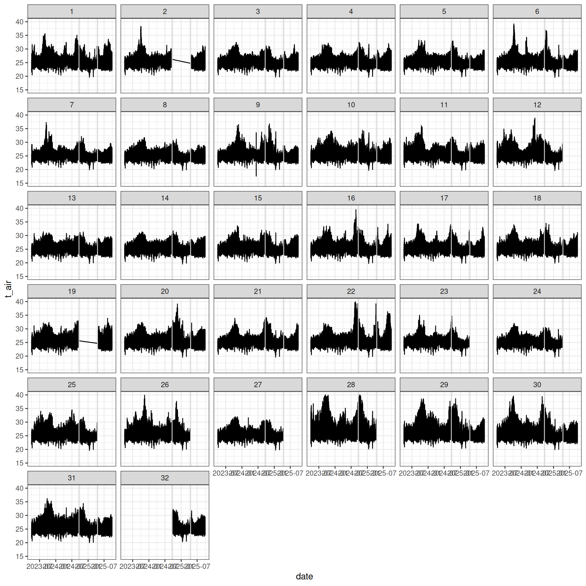

Code
library(tidyverse)library(tidyverse)This is the chunk to manually prepare the dataset, this should be automated in the future.
source("scripts/read_tomst_data.R")
source("scripts/read_tomst_campaign.R")
source("scripts/read_sensor_project.R")
data <- read_sensor_project(
path = "data/Paracou_ALT_TOMST/",
sensor = "TOMST"
)
write_tsv(data, "datasets/Paracou_ALT_TOMST.tsv")Currently available campaigns are:
readxl::read_xlsx("data/Paracou_ALT_TOMST/campaigns.xlsx") |> knitr::kable()| campaign | utc | start | end |
|---|---|---|---|
| 20240920 | -3 | 20230401 | 20240920 |
| 20250418 | -3 | 20240920 | 20250418 |
| 20250930 | -3 | 20250418 | 20250930 |
read_tsv("datasets/Paracou_ALT_TOMST.tsv", n_max = 20) %>%
head() %>%
knitr::kable()| id | sensornum | field | defect | comment | date | t_soil | t_surface | t_air | moisture |
|---|---|---|---|---|---|---|---|---|---|
| 1 | 94223161 | TRUE | NA | NA | 2023-03-31 22:00:00 | 24.5000 | 23.6250 | 22.7500 | 2469 |
| 1 | 94223161 | TRUE | NA | NA | 2023-03-31 22:15:00 | 24.5000 | 23.6250 | 22.7500 | 2469 |
| 1 | 94223161 | TRUE | NA | NA | 2023-03-31 22:30:00 | 24.5000 | 23.5625 | 22.7500 | 2469 |
| 1 | 94223161 | TRUE | NA | NA | 2023-03-31 22:45:00 | 24.5000 | 23.5000 | 22.6875 | 2468 |
| 1 | 94223161 | TRUE | NA | NA | 2023-03-31 23:00:00 | 24.5000 | 23.5000 | 22.6250 | 2469 |
| 1 | 94223161 | TRUE | NA | NA | 2023-03-31 23:15:00 | 24.4375 | 23.5625 | 22.7500 | 2468 |
read_tsv("datasets/Paracou_ALT_TOMST.tsv") %>%
ggplot(aes(date, t_air)) +
geom_line() +
theme_bw() +
geom_vline(xintercept = c(
as_datetime("2024-09-20 00:00:00"),
as_datetime("2025-04-18 00:00:00")
), col = 'lightgrey') +
facet_wrap(~ id) +
ylim(15, 40)
To be described.
- To automate, by hand for the moment with the three folders.
- This is heavy in memory so it should be automated with a workflow based on intermediary files.